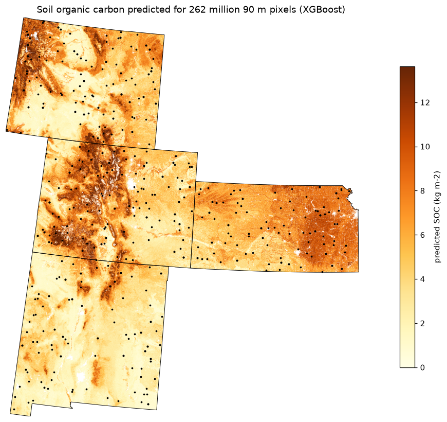
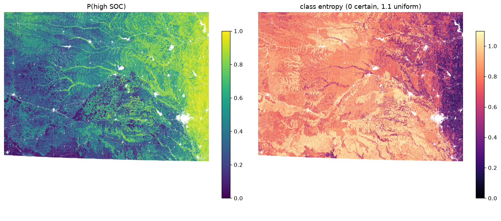
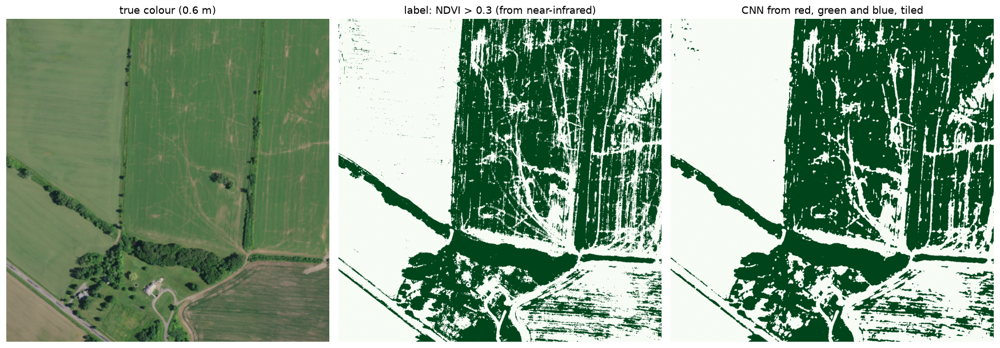

Training and Prediction at Scale: Random Forests, Boosting and Deep Learning on GPUs
Spatial machine learning has an unusual shape. The training data are often small (a few hundred soil samples, a few thousand labelled pixels), while the prediction covers every pixel of a large raster: hundreds of millions of rows. Deep learning adds images that are too large to pass through a network at once. This notebook uses geolattice.distributed.ml for each part: fitting random forests and gradient boosting on the CPU and the GPU with spatial cross-validation, predicting a soil organic carbon map over all 262 million pixels of the Great Plains, running a convolutional network over a 1.7 GB aerial image in overlapping tiles, and training a network with distributed data parallelism (DDP).
Overview
Where the work is
Stage
Size here
Parallel pattern
Training a tree ensemble
561 complete rows, 12 covariates
trees in parallel (random forest), split finding in parallel (boosting); a GPU helps for large tables
Cross-validation
5 folds x 3 models
each fold is independent
Predicting a raster
262 million pixels x 12 covariates
embarrassingly parallel: chunk by chunk, the model copied to each worker
Tiled inference of a CNN
18,510 x 24,400 pixels
overlapping tiles; batches spread over GPUs
Training a network on large data
many batches
data parallel: each device holds a model replica, sees a shard of the data, and gradients are averaged after every step
Spatial cross-validation
Random k-fold cross-validation puts neighbouring samples into training and test folds, and with spatially autocorrelated data it overstates accuracy. Spatial cross-validation groups samples into spatial blocks (here 5 clusters of the sample coordinates) and holds out one block at a time, which better reflects prediction into unsampled areas.
Tiles, overlap and receptive fields
A convolutional network sees a neighbourhood around each output pixel (its receptive field). At the edge of a tile part of that neighbourhood is missing and the network sees padding, so predictions near tile edges differ from those in the middle. Overlapping tiles and keeping only each tile’s centre (crop blending) remove the seams when the overlap covers the receptive field.
Distributed data parallel
DDP starts one process per device. Each process builds the same model, reads a different shard of each epoch’s data (DistributedSampler), and after every backward pass the gradients are averaged across processes (an all-reduce, NCCL on GPUs, Gloo on CPUs), so all replicas stay identical. With n devices an epoch takes about 1/n of the time.
Machine Learning with GeoLattice
Function
Does
CPU / GPU
pdist.ml.fit(model, X, y, task=)
fits "rf", "xgb", "lgbm" or any scikit-learn estimator; records the engine
scikit-learn, XGBoost, LightGBM / cuML random forest, XGBoost on CUDA
pdist.ml.predict_raster(model, stack, proba=)
predicts every pixel of a (band, y, x) raster chunk by chunk; NaN pixels stay NaN
runs a PyTorch model over a large image in overlapping tiles, one replica per GPU
PyTorch
pdist.ml.train_ddp(fn, nprocs=, args=) and ddp_model(model, rank)
launches DDP training, one process per device
NCCL / Gloo
With an active cluster session, scikit-learn fits run on the cluster through joblib’s Dask backend and XGBoost on Dask arrays uses xgboost.dask.
Learning objectives
Locate the expensive parts of a spatial machine learning workflow.
Fit random forest, XGBoost and LightGBM models on CPU and GPU, with spatial cross-validation.
Predict a 262 million pixel map chunk by chunk, and compare CPU and GPU prediction.
Predict class probabilities for every pixel.
Run a CNN over a 1.7 GB image in tiles and show that the tiles leave no seams.
Train a network with distributed data parallelism and check that the replicas agree.
Data
Dataset
Content
Great Plains soil organic carbon
570 points with SOC (kg m-2)
Great Plains covariates
12 continuous 90 m rasters (elevation, terrain, NDVI, climate, soil texture, K factor), 17,196 x 15,245
Aerial image
Data/08_remote_sensing/08_09_image_classification/Image_Fusion/HR/HR_Rural_July_14.tif: 0.6 m, 18,510 x 24,400 pixels, red, green, blue and near-infrared, 1.7 GB
Contents
Setup
The training table
Models on CPU and GPU with spatial cross-validation
A soil carbon map of 262 million pixels
Class probabilities for every pixel
A CNN over a 1.7 GB image in tiles
Distributed data parallel training
Summary and exercises
Setup
Code
import warnings # warning controlwarnings.filterwarnings("ignore") # hide routine library warningsimport os # environment and CPU countimport time # wall-clock timingfrom pathlib import Path # file pathsimport matplotlib.pyplot as plt # figuresimport numpy as np # arraysimport pandas as pd # tablesimport geopandas as gpd # vector dataimport xarray as xr # labelled rastersimport geolattice # GeoLatticeimport geolattice.distributed as pdist # distributed and GPU spatial computingimport dist_data as dd # chapter helper: paths, cached downloads, timersplt.rcParams.update({"figure.dpi": 110}) # figure resolutionpd.set_option("display.width", 140) # wider printed tablesOUT = Path("outputs") # results and scratch files written by this chapterOUT.mkdir(exist_ok=True) # create it if neededcaps = pdist.capabilities() # engines and GPUs on this machineprint("GeoLattice", geolattice.__version__, "|", os.cpu_count(), "CPU cores |", caps["gpus"], "GPU(s)", # versionsf"({caps.get('gpu_memory_total', 0) /1e9:.0f} GB)"if caps["gpus"] else"") # GPU memoryimport sys # module search path for the DDP scriptimport torch # deep learningfrom sklearn.cluster import KMeans # spatial blocks for cross-validationfrom sklearn.metrics import mean_squared_error, r2_score # accuracy measuresdef sync(): # wait for queued GPU work so timings are realif caps["gpus"]: # only with a GPUimport cupy as cp # GPU arrays cp.cuda.Device().synchronize() # block until doneif torch.cuda.is_available(): # PyTorch work too torch.cuda.synchronize() # block until donedef timed(fn): # wall time and result of one call t = time.perf_counter(); out = fn(); sync();return time.perf_counter() - t, out # time it
Models on CPU and GPU with spatial cross-validation
Each model is fitted five times, holding out one spatial block each time, on the CPU and on the GPU where an implementation exists (cuML for the random forest, XGBoost’s CUDA backend; LightGBM here is CPU only).
Code
models = {"rf": dict(n_estimators=500, max_features=0.5, random_state=0), # random forest"xgb": dict(n_estimators=400, learning_rate=0.03, max_depth=4, subsample=0.8, colsample_bytree=0.8), # boosting"lgbm": dict(n_estimators=400, learning_rate=0.03, num_leaves=15, subsample=0.8, subsample_freq=1, colsample_bytree=0.8)} # boostingrows = [] # one row per model and targetfor name, params in models.items(): # each modelfor c in (["cpu", "gpu"] if caps["gpus"] and name !="lgbm"else ["cpu"]): # targets with an implementation pred = np.empty_like(y); fit_s =0.0# out-of-block predictions and fit timefor b inrange(5): # hold out each block tr_, te = blocks != b, blocks == b # split s, m = timed(lambda: pdist.ml.fit(name, X[tr_], y[tr_], task="regression", compute=c, **params)) # fit fit_s += s # total fit time pred[te] = np.asarray(m.predict(X[te])).ravel() # predict the held-out block rows.append({"model": name, "compute": c, "engine": m.geolattice_engine, "fit 5 folds (s)": fit_s, # description"RMSE (log)": mean_squared_error(y, pred) **0.5, "R2": r2_score(y, pred)}) # spatial CV accuracycv = pd.DataFrame(rows).set_index(["model", "compute"]) # tablecv.round(3) # show
engine
fit 5 folds (s)
RMSE (log)
R2
model
compute
rf
cpu
sklearn
3.498
0.710
0.436
gpu
cuml
8.227
0.711
0.434
xgb
cpu
xgboost-cpu
0.377
0.707
0.441
gpu
xgboost-cuda
1.046
0.698
0.454
lgbm
cpu
lightgbm-cpu
0.346
0.720
0.419
With 561 rows (the 570 samples less 9 with a missing covariate), training takes seconds everywhere and the GPU offers no advantage: there is too little work to fill it, and copying data and launching kernels cost more than they save. The GPU pays off for training on millions of rows (for example the pixels of a classified image), not for point samples. The accuracies are modest, as is typical for soil carbon at the regional scale under spatial cross-validation, and the three model types are close. The prediction step below is where scale matters.
A soil carbon map of 262 million pixels
The XGBoost model is refitted once on all samples, and pdist.ml.predict_raster applies it to every pixel of the 12-band stack, chunk by chunk, first on the CPU and then with the same trees moved to the GPU. (Comparing two separately trained models would mix the device with the random row and column sampling of training: a first version of this cell did that, and the two maps differed by up to 0.8 log units.) Pixels where any covariate is missing stay NaN.
Code
import copy # copy a fitted modelfinal = {"cpu": pdist.ml.fit("xgb", X, y, task="regression", compute="cpu", **models["xgb"])} # one model, fitted onceif caps["gpus"]: # the same trees, predicting on the GPU final["gpu"] = copy.deepcopy(final["cpu"]); final["gpu"].set_params(device="cuda") # move the booster to the device final["gpu"].geolattice_engine ="xgboost-cuda"# predict_raster then feeds it CuPy chunksprint(f"stack: {dict(stack.sizes)}, {dd.gb(stack.nbytes)}, {stack.data.npartitions} chunks") # sizet, maps = {}, {} # timings and mapsfor c, m in final.items(): # each model lazy = pdist.ml.predict_raster(m, stack) # lazy map, one task per chunkwith dd.PeakMemory() as pm: # watch memory t[c], soc_map = timed(lambda: lazy.compute()) # read covariates and predict every pixelprint(f"{m.geolattice_engine}: {t[c]:.1f} s, peak memory {pm.peak_gb:.1f} GB, "# time and memoryf"{int(np.isfinite(soc_map.values).sum()) / t[c] /1e6:.1f} million predicted pixels per second") # throughput maps[c] = soc_map # keep itiflen(maps) ==2: # compare the two d = np.abs(maps["gpu"].values - maps["cpu"].values) # difference in log SOCprint(f"largest |GPU - CPU| difference: {np.nanmax(d):.2e} (log units)") # agreement
stack: {'band': 12, 'y': 17196, 'x': 15245}, 12.58 GB, 864 chunks
xgboost-cpu: 35.6 s, peak memory 27.6 GB, 3.5 million predicted pixels per second
xgboost-cuda: 10.4 s, peak memory 30.6 GB, 11.8 million predicted pixels per second
largest |GPU - CPU| difference: 6.44e-06 (log units)
Code
m = np.exp(maps["cpu"]) # back to kg m-2q = dd.quicklook(m, 8) # every 8th pixel for plottingfig, ax = plt.subplots(figsize=(8.5, 8)) # one mapim = ax.imshow(q, cmap="YlOrBr", vmin=0, vmax=np.nanpercentile(q, 98), extent=dd.extent(q)) # mapsoc.plot(ax=ax, markersize=2, color="k") # sampling pointsdd.gp_states().boundary.plot(ax=ax, color="k", lw=0.6) # statesplt.colorbar(im, ax=ax, shrink=0.7, label="predicted SOC (kg m-2)") # scaleax.set_title("Soil organic carbon predicted for 262 million 90 m pixels (XGBoost)"); ax.set_axis_off(); plt.tight_layout(); plt.show() # draw

Prediction on the GPU was several times faster than on 24 CPU cores, and the two maps agree to float32 rounding: the GPU model receives each chunk as a CuPy array and predicts without copying the model back and forth. The map follows the covariates the samples tracked in notebook 05: higher carbon under the wetter, greener east and the cool, high mountains, low carbon on the warm and dry southern plains.
Class probabilities for every pixel
With proba=True, predict_raster returns one probability layer per class. Here SOC is split into terciles (low, medium, high) and an XGBoost classifier gives each pixel’s probability of belonging to the high class; for speed this runs on a 4096 x 4096 window of Kansas.
Code
cls = np.digitize(y, np.quantile(y, [1/3, 2/3])) # 0 low, 1 medium, 2 highclf = pdist.ml.fit("xgb", X, cls, task="classification", compute="gpu"if caps["gpus"] else"cpu", n_estimators=300, max_depth=3, learning_rate=0.05) # classifierwin = stack[:, 8000:12096, 9000:13096] # central Kansas windowt0 = time.perf_counter(); prob = pdist.ml.predict_raster(clf, win, proba=True).compute(); s = time.perf_counter() - t0 # probabilitiesprint(f"{dict(prob.sizes)} in {s:.1f} s; classes {prob['class'].values.tolist()}; probabilities sum to 1:", # shapebool(np.allclose(prob.sum("class").values[np.isfinite(prob[0].values)], 1, atol=1e-5))) # checkfig, ax = plt.subplots(1, 2, figsize=(13, 5.5)) # two mapsim = ax[0].imshow(prob.sel({"class": 2}), cmap="viridis", vmin=0, vmax=1); ax[0].set_title("P(high SOC)"); plt.colorbar(im, ax=ax[0], shrink=0.8) # high classent =-(prob * np.log(prob.clip(1e-9))).sum("class").where(np.isfinite(prob[0])) # entropy: uncertainty of the classim = ax[1].imshow(ent, cmap="magma", vmin=0, vmax=np.log(3)); ax[1].set_title("class entropy (0 certain, 1.1 uniform)"); plt.colorbar(im, ax=ax[1], shrink=0.8) # uncertainty[a.set_axis_off() for a in ax]; plt.tight_layout(); plt.show() # draw
{'class': 3, 'y': 4096, 'x': 4096} in 3.1 s; classes [0, 1, 2]; probabilities sum to 1: True

A CNN over a 1.7 GB image in tiles
A tiny fully convolutional network learns to recognise vegetation from the red, green and blue bands alone. Its labels come from the near-infrared band (NDVI above 0.3), so no manual labelling is needed: the network must learn from colour and texture what the near-infrared band shows directly. It is trained on random patches, then pdist.ml.predict_tiles runs it over the whole image in 512 pixel tiles with 32 pixels of overlap.
Code
import rioxarray # read the imageimg = rioxarray.open_rasterio(dd.DATA /"08_remote_sensing"/"08_09_image_classification"/"Image_Fusion"/"HR"/"HR_Rural_July_14.tif") # lazywith dd.timer("read the 4-band 0.6 m image"): # 1.8 GB of uint8 arr = img.values # (4, 24400, 18510)rgb = (arr[:3].astype(np.float32) /255.0) # inputs: red, green, blue in 0..1ndvi = (arr[3].astype(np.float32) - arr[0]) / (arr[3].astype(np.float32) + arr[0] +1e-6) # labels from near-infrared and redlabel = (ndvi >0.3).astype(np.float32) # vegetation maskprint(f"image {arr.shape}, {dd.gb(arr.nbytes)}; vegetation share {label.mean():.1%}") # sizesdev ="cuda"if torch.cuda.is_available() else"cpu"# training devicetorch.manual_seed(0); rng = np.random.default_rng(0) # reproduciblenet = torch.nn.Sequential( # 4 convolutions: receptive field of 9 x 9 pixels torch.nn.Conv2d(3, 16, 3, padding=1), torch.nn.ReLU(), torch.nn.Conv2d(16, 16, 3, padding=1), torch.nn.ReLU(), torch.nn.Conv2d(16, 16, 3, padding=1), torch.nn.ReLU(), torch.nn.Conv2d(16, 2, 3, padding=1)).to(dev) # 2 classesopt = torch.optim.Adam(net.parameters(), lr=3e-3) # optimizert0 = time.perf_counter() # startfor step inrange(300): # 300 batches of 16 random 128 x 128 patches r = rng.integers(0, arr.shape[1] -128, 16); c = rng.integers(0, arr.shape[2] -128, 16) # patch corners xb = torch.from_numpy(np.stack([rgb[:, i:i +128, j:j +128] for i, j inzip(r, c)])).to(dev) # inputs yb = torch.from_numpy(np.stack([label[i:i +128, j:j +128] for i, j inzip(r, c)])).long().to(dev) # labels loss = torch.nn.functional.cross_entropy(net(xb), yb) # pixelwise loss opt.zero_grad(); loss.backward(); opt.step() # updateprint(f"trained on {dev} in {time.perf_counter() - t0:.0f} s, final loss {float(loss):.3f}") # training
read the 4-band 0.6 m image: 6.99 s
image (4, 24400, 18510), 1.81 GB; vegetation share 54.4%
trained on cuda in 2 s, final loss 0.074
Code
t = {} # timingswith dd.PeakMemory() as pm: # watch host memory t["whole image, tiles of 512, overlap 32"], out = timed(lambda: pdist.ml.predict_tiles(net, rgb, tile=512, overlap=32, batch_size=16)) # tiled inferencepred = out.argmax(0) # predicted class per pixelacc = (pred == label).mean() # agreement with the NDVI labelsprint(f"{out.shape[1]:,} x {out.shape[2]:,} pixels in {list(t.values())[0]:.0f} s, peak memory {pm.peak_gb:.0f} GB; "# time and memoryf"agreement with NDVI labels {acc:.1%}") # accuracycrop = rgb[:, 10000:12048, 8000:10048] # a 2048 x 2048 cropwith torch.inference_mode(): # whole crop at once, no tiles whole = net(torch.from_numpy(crop[None]).to(dev)).float().cpu().numpy()[0] # referencetiled = pdist.ml.predict_tiles(net, crop, tile=256, overlap=32) # the same crop in 81 tilesnaive = pdist.ml.predict_tiles(net, crop, tile=256, overlap=0) # tiles without overlapinner = (slice(None), slice(8, -8), slice(8, -8)) # away from the crop borderprint(f"largest difference to whole-crop inference: overlap 32: {np.abs(tiled - whole)[inner].max():.1e}, "# seamlessf"no overlap: {np.abs(naive - whole)[inner].max():.2f}") # seams
24,400 x 18,510 pixels in 13 s, peak memory 66 GB; agreement with NDVI labels 97.1%
largest difference to whole-crop inference: overlap 32: 0.0e+00, no overlap: 12.10
Code
fig, ax = plt.subplots(1, 3, figsize=(16, 5.5)) # three panelsz = (slice(10000, 11024), slice(8000, 9024)) # 1024 x 1024 pixels (614 m)ax[0].imshow(np.moveaxis(rgb[(slice(None),) + z], 0, -1)); ax[0].set_title("true colour (0.6 m)") # imageax[1].imshow(label[z], cmap="Greens"); ax[1].set_title("label: NDVI > 0.3 (from near-infrared)") # labelsax[2].imshow(pred[z], cmap="Greens"); ax[2].set_title("CNN from red, green and blue, tiled") # prediction[a.set_axis_off() for a in ax]; plt.tight_layout(); plt.show() # draw

The tiled run covered all 452 million pixels in well under a minute on the GPU. With 32 pixels of overlap the tiled result equals whole-crop inference to floating point rounding everywhere except the crop’s own border: the network’s receptive field (9 x 9 pixels) fits inside the 16 pixels each tile keeps as margin. Without overlap the tile edges see padding instead of their neighbours, and the predictions there differ. The CNN reproduces the NDVI mask closely from colour alone; trees, lawns and crops are green in the visible bands too.
Memory is the practical limit of this function: it holds the image as float32, its padded copy, the float64 accumulator and the output in host memory; with the training arrays the process peaked at about 65 GB here. For larger images, run it window by window, or wrap it in pdist.raster.map_tiles with an overlap.
Distributed data parallel training
pdist.ml.train_ddp starts one process per device and runs a training function in each. The function lives in scripts/ddp_soc.py (worker processes import it by name): it builds a small network for log SOC, wraps it with pdist.ml.ddp_model, and gives each rank its own shard of the data. With one GPU on this machine the GPU run uses one process; the CPU run uses two processes with the Gloo backend, which shows the mechanics of several ranks.
Code
sys.path.insert(0, str(Path("scripts").resolve())) # make scripts/ddp_soc.py importable in the worker processesimport ddp_soc # the training functionXs = ((X - X.mean(0)) / X.std(0)).astype(np.float32) # standardised predictorsruns = {} # results per setupif caps["gpus"]: # one process on the GPU, NCCL t0 = time.perf_counter(); runs["1 GPU (NCCL)"] = pdist.ml.train_ddp(ddp_soc.train, nprocs=1, args=(Xs, y, 200)); runs["1 GPU (NCCL)"].append(time.perf_counter() - t0) # traint0 = time.perf_counter(); runs["2 CPU processes (Gloo)"] = pdist.ml.train_ddp(ddp_soc.train, nprocs=2, backend="gloo", args=(Xs, y, 200)); runs["2 CPU processes (Gloo)"].append(time.perf_counter() - t0) # trainfor name, r in runs.items(): # summarise*ranks, secs = r # rank results and timeprint(f"{name}: {secs:.0f} s | "+" | ".join(f"rank {k['rank']} on {k['device']}: {k['rows']} rows, final loss {k['history'][-1]:.3f}, "f"weights checksum {k['weights_checksum']:.6f}"for k in ranks)) # per rank
1 GPU (NCCL): 6 s | rank 0 on cuda:0: 561 rows, final loss 0.085, weights checksum -33.331352
2 CPU processes (Gloo): 5 s | rank 0 on cpu: 281 rows, final loss 0.101, weights checksum -21.550788 | rank 1 on cpu: 281 rows, final loss 0.110, weights checksum -21.550788
Each of the two CPU ranks trained on half of the rows per epoch, yet both ended with exactly the same weights (the checksums match): DDP averages the gradients after every step, so the replicas never diverge. The times are dominated by starting the processes and by communication; a network this small on 561 rows gains nothing from parallel training. DDP pays off when each step is expensive: large networks, large images, many batches. On a machine with n GPUs, train_ddp(fn) without nprocs starts one process per GPU with NCCL, and the same function runs unchanged; on a cluster torchrun or a SLURM job array starts the processes instead.
Summary and exercises
In spatial machine learning, training data are often small and prediction is large. With 570 samples the GPU did not speed up training; it sped up prediction of 262 million pixels several times, with results identical to the CPU’s.
Spatial cross-validation by blocks gave a realistic R2 for regional soil carbon.
predict_raster predicts values or class probabilities chunk by chunk; NaN pixels stay NaN.
predict_tiles ran a CNN over a 1.7 GB image; with an overlap at least twice the receptive-field radius the tiles left no seams.
train_ddp and ddp_model keep replicas identical by averaging gradients; parallel training pays off only when each step is expensive.
Exercises
Replace the random spatial blocks with 10 blocks and with leave-one-state-out cross-validation. How do RMSE and R2 change?
Predict the SOC map with the random forest on the GPU (cuML) and compare speed and map with XGBoost.
Run predict_tiles with tile=256 and tile=1024. How do time and GPU memory change?
Add a fifth convolution to the CNN. What is the receptive field now, and what overlap removes the seams?